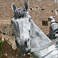
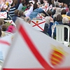
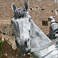
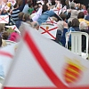

|
Lé p'tit êfant au sein s'en va chuchi l'tétîn dé l'ochéan laitchi lavé dé crème, dé r'sîn. La méthe est bein paîsibl'ye, la c'mînse dêboutonnée nos mouontre eune île fèrtile et dentellé d'la mé. La mathée tchi s'èrtithe a dêcouvèrt l'rotchi tchi boulque coumme un piéchot, tchi boule dé lait et d'myi. Les longues-pièrres sont les dents des mâchouaithes dé mémouaithes tchi moulinnent les mots d'pommes et les patholes des mouaithes, les pâssions des frambouaises, les s'grets des néthes gradiles, les réchinnes ès garçons, les langues fritées ès fil'yes. Les pas des saints pèlerîns sus nos mielles millénaithes ont mèrtchi dans l'sablion les ris rhythmiques d'lus priéthes. La jouaie dé la pathole èrsonne coumme un bachîn j'rions acanté ieux en viageant en pèlerîn. Nou pâle du cidre chucré dé nos côtis juseurs; nou soûffl'ye des brîns d'solé en chuchotant des flieurs. Nos pèrrons sont changis en muthâles dé crista, transfidguthés en tours couronnées dé lîlas. Les flieuthions dé grannit ont s'mé un brave avoût; nos soudards sont pliantés à dgetter dans eune tou. Les hîtres sont en batâle; les baînis font la dgèrre; les manchots et les vliques lus cliutent ès êtrangièrs. Les vieillottes dé patholes sont des mouaies littéthaithes, un glossaithe dé galots dé d'dans les monastéthes. Jutchis sus les falaises, les mouaines et les corbîns piâllent lus priéthes en tchoeu, des cantiques cristallîns et bliancs sus ches êtchets, ches pâles greunes mié-muchies. Lé lîncheu dé l'autel – la misaine d'un vailyi. Les frits jusants des louêmes ont n'yé les roses rotchièrs; nou-s'a vraitchi lé vrai, et l'faux, ès ouothilièrs. Les longs batchieaux arrivent ès fiéthes têtes des dragons, navithes dé St. Hélyi tchi scoddent à l'horizon. Nou-s'a vraitchi des nouages; nos langues sont abantchies Sus lé sablion ès grèves – nou prêche d'amour dé d'si, d'eune pâssion d'la mathée tchi monte et tchi s'èrtithe; la mathée d'bourdonniéthe chèrgie dé myi et d'chithe pouor scêller nos contrats dé tèrre, dé dgèrre, dé mort dans nos caûminnes et clios. La grève lit coumme dé l'or. Les falaises sont jaunies, les rotchièrs lithent acouo, arrouôsés par la mé, dêsaûssés dans un tro dé vaux et creux et pits. Nos lav'rêsses dé mémouaithes ont ouâchinné les pièrres dé haûgard et d'chînm'tchiéthe. Et quand veindra la niet, les êtailes pétill'lont coumme eune rueûtchie dé veues en chent constellâtions, des galots galactiques britchant eune néthe muthâle driéthe tchi qu'nou s'endort, dans tchi qu'nos rêves nos pâlent. Les louêmes nos ont bèrchi à la brachie d'baûchet; les batchieaux ont êss'mé l'tou des touffets dé vrai. À la r'chèrche dé conmèrce et d'cartchaîsons dé tchoeurs, les bèrques ont câressé la fache des avanteurs. La baleine et la pieuvre, l'andgulle et la mouothue acanté ches mat'lots sus l'ochéan tchoeuthu ont halé des richêsses, ont pêtchi des promêsses dé mié-dêmathiés par eune séthée ivrêsse. eune froutchie dé rouoges frits, eune tchul'lée d'jus à siéthe; Mais ch'est la tèrre tch'èrchait les réchinnes êtrangiéthes; des patates appathaîssent accliutchies ès rotchièrs; des mathes dé lait arrouôsent les tonmates dans lus bèrs. Atout eune révéthence la vaque et la brébis et l'fèrmyi font la carre en changeant d'parchonnyi. Nou n'èrtrouve qué la leune en dansant souos l's êtailes. Lé bestchias à l'êtabl'ye né fliotte qu'atout des vailes. Les vaques-navithes lanchis sus eune mathée dé mots ont beûlé des batâles, ont eune foulboulque d'piéchots. Les triyeuses dé finnances ont êputhé nos sou; acatés à Grouville et vendus à St. Ou, abanonnés enfîn, êdgéthés à St. Jean, j'sommes payis en pliastique, en or et en argent. Not' héthitage patchi et env'yé au marchi et bardgîngni en Ville, du bannelais dé louis, un avoût d'avarice, eune histouaithe fabritchie des mythes du Mouoyen Âge au mitan du trafi. L'învestissement înfecte à l'odeu d'romathîn et d'lavande cotonnée pouor laver ches hèrpîns. Si nou scrobbe hors les banques, nou flianque hors la banqu'sie et l'usell'lie d'l'usuthe et la faîs'sie d'profit. N'y'étha pus d'aut' qu'la mé, la campangne et les mielles tchi m'suthent les millénaithes, les bieautés natuthelles tch'ont souôb'sé nos baîsièrs sans en saver lé prix. Nos sou sont sans valeu, nos vailes soûffliés dé d'si nos poussent vèrs l'horizon – j'sommes embèrtchi enfîn sus un baté d'grannit, lé navithe dé l'av'nîn. Les châtchieaux dispathaîssent, les longues-pièrres ont tchée bas, N'y'a pus dé grands bâtisses dans tchi faithe du travas; la libèrté litchide couort mêlé dans not' sang, et dans lé lait d'la mé chuchi par un êfant.
Geraint Jennings |


  
  

Viyiz étout: